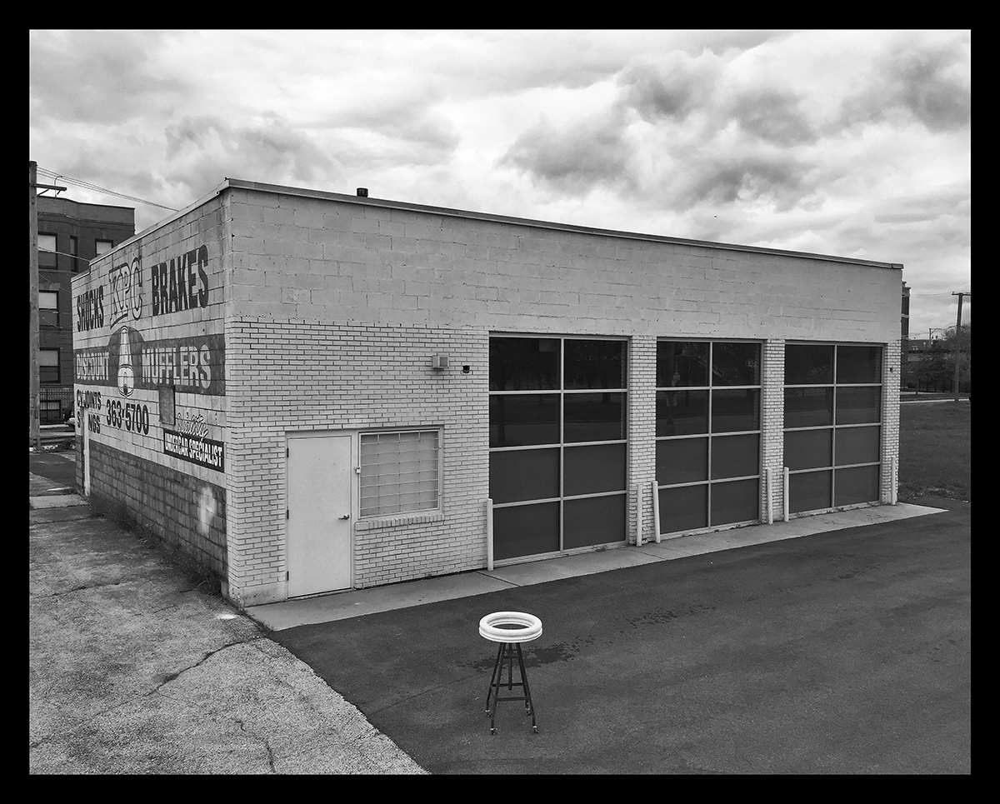
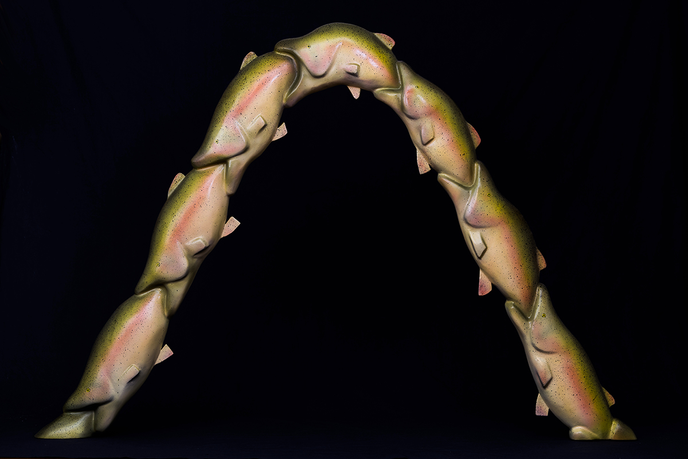
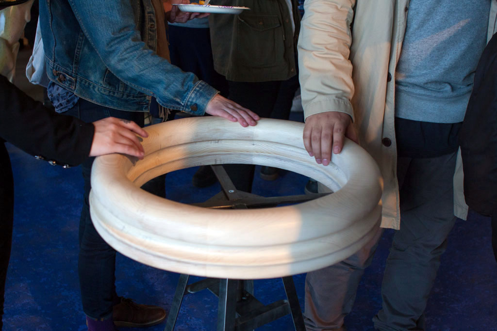
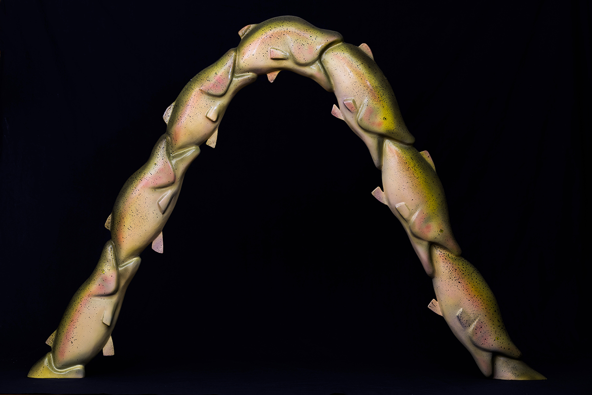
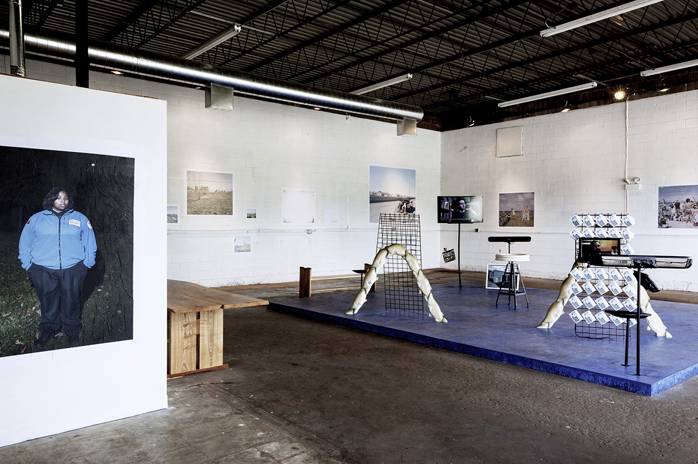
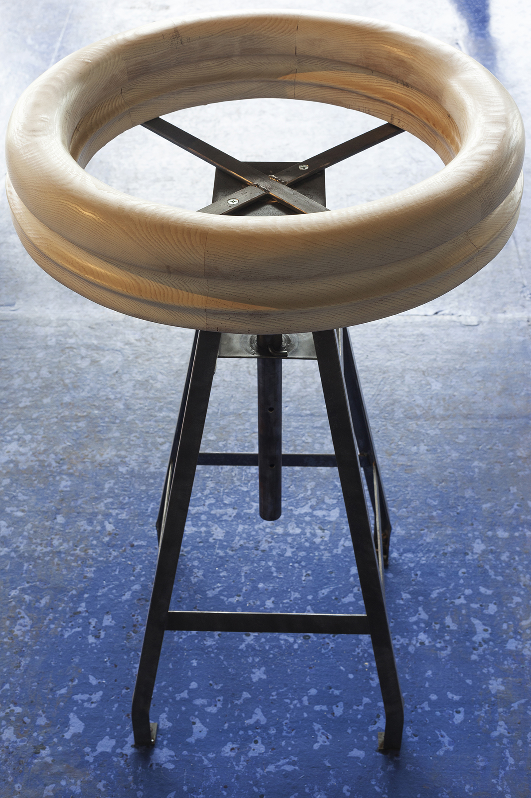
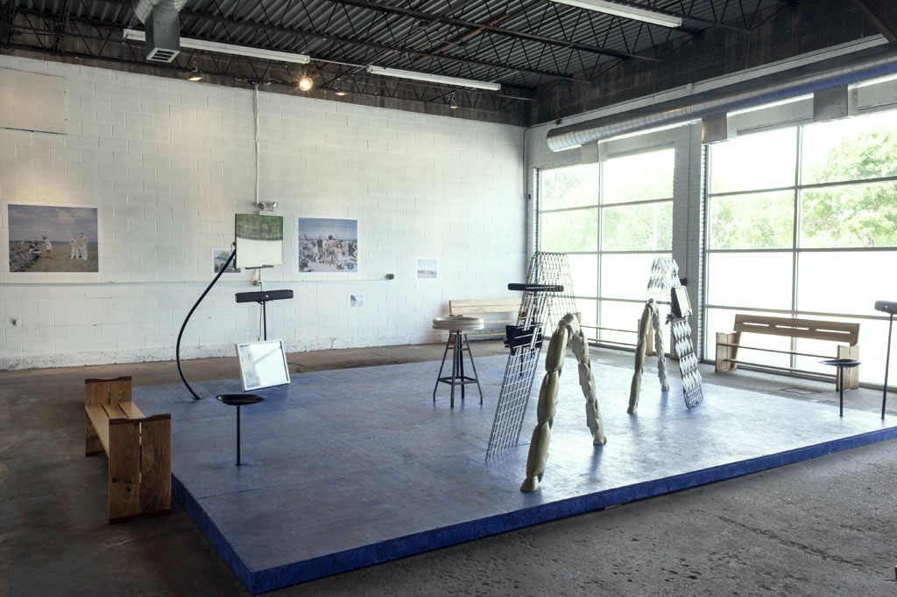
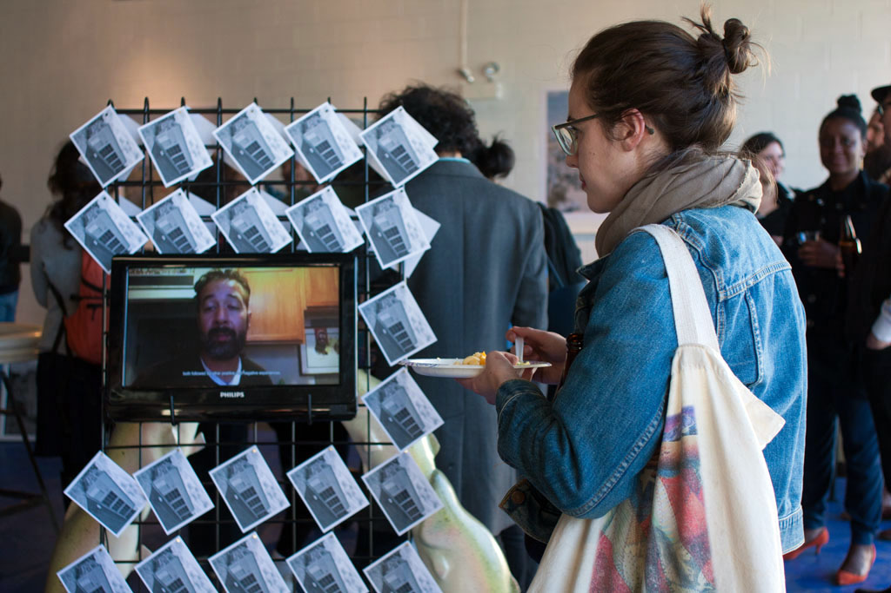
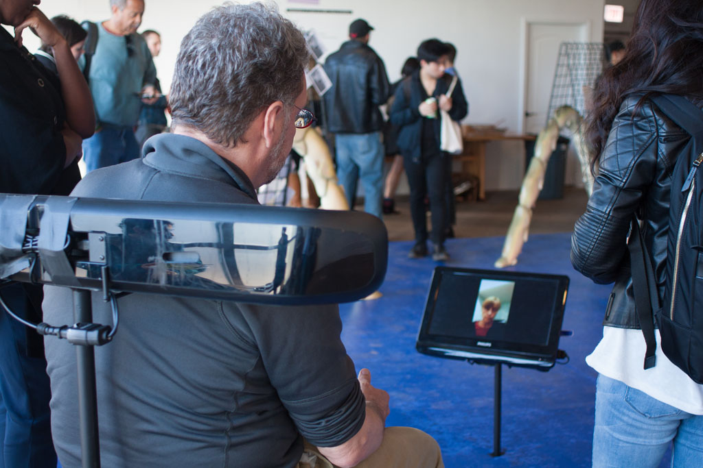

Postcard front image.

Foam, plastic, paint.

Installation at The Muffler Shop, Chicago IL 2017.

Foam, plastic, paint.

Installation at The Muffler Shop, Chicago IL 2017.

Installation at The Muffler Shop, Chicago IL 2017.

Installation at The Muffler Shop, Chicago IL 2017.

Installation at The Muffler Shop, Chicago IL 2017.

Installation at The Muffler Shop, Chicago IL 2017.
FISH EATING FISH
“Choose not to be harmed and you won't feel harmed. Don't feel harmed and you haven't been.” -Marcus Aurelius
Fish Eating Fish (FEF)is a multimedia installation that consists of three self-recorded testimonials, sculptures in wood and foam, photographs, hand-crafted seats, and an assortment of steel structures, speakers, and monitors. FEF was conceived after my earlier performance work, Cards Against Humanity, and builds upon the concept that one can manage trauma by following a particular path, specifically a path derived from the logic of the circular hand railing.
As explained in the testimonials, this logic is that of a person who seeks relief from an acute emotional pain. The juxtaposition of the traumatic event and the logic's somewhat wild presumptions are meant to bring forth empathy, not solely for the person who is currently experiencing the loss but for all those faced with hardship.
“It is in times of security that the spirit should be preparing itself for difficult times; while fortune is bestowing favors on it is then is the time for it to be strengthened against her rebuffs.” -Seneca
FEF was an attempt to make a work that was purely earnest, not only through transparency and vulnerability, but also through a desire to help and share. Like Cards Against Humanity, the idea is intended to be circulated, through word-of-mouth, as in the testimonials, and through the intimacy of a postcard, of which hundreds were provided during the installation. The postcards depicted the image of the circular hand railing on one side and were left blank on the other.